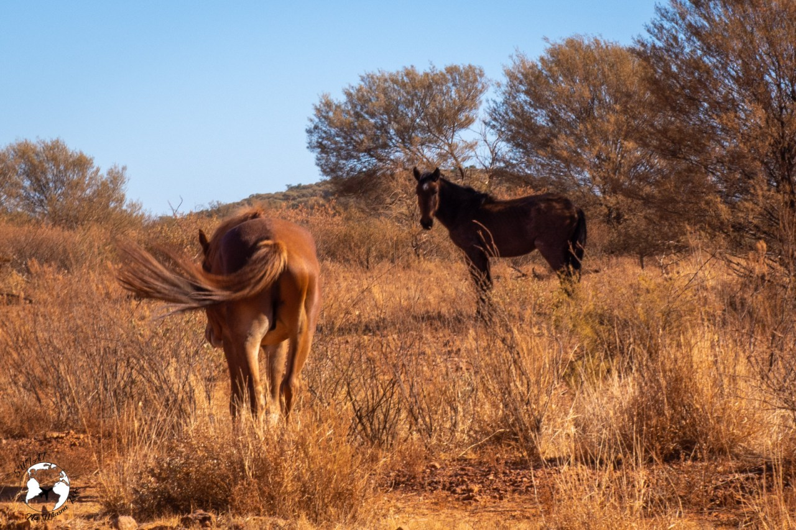
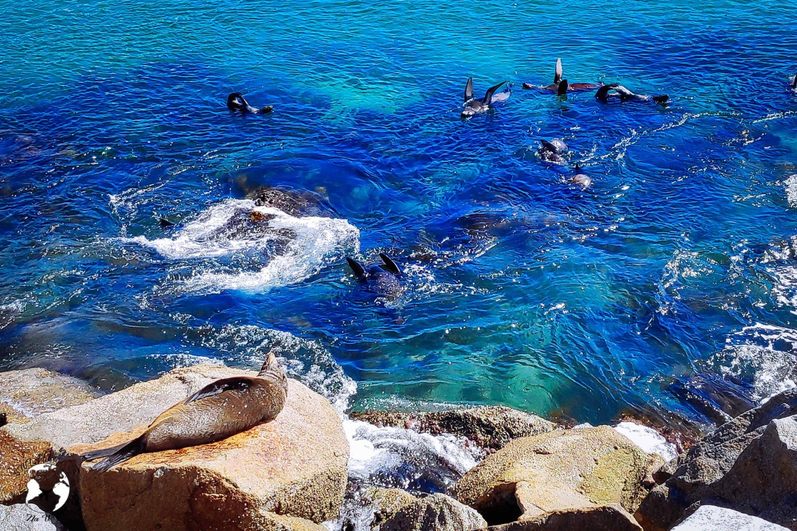

Mateusz Pakuła
Zwierzęta występujące w Australii
Mój pierwszy artykuł! 🠖 Wodór
Fauna Australii – różni się zasadniczo od fauny z innych rejonów świata.
Wiele australijskich zwierząt nie występuje nigdzie indziej. 83% ssaków, 89% gadów, 90% ryb i 93% płazów żyjących w Australii
jest endemitami. Tak duża liczba endemicznych gatunków jest wynikiem długiej geologicznej izolacji kontynentu.
Kangury
Wiadomo! To symbol Australii, w końcu na żadnym innym kontynencie ich nie spotkamy. Potrafią skoczyć nawet na wysokość 3 metrów, a skok może być długości 9 metrów!
Największym wśród kangurów jest kangur rudy żyjący na Outbacku. U kangurów bardzo ciekawie przebiega ciąża, bowiem małe kangurzątko po 35 dniach pobytu w macicy samo przechodzi
do sutków osłoniętych torbą lęgową, gdzie przebywa przez 5-11 miesięcy. W tym czasie zdarza my się opuszczać torbę i zapoznawać z otoczeniem.
Koale
Kolejny przedstawiciel torbaczy. Żywi się liśćmi eukaliptusa (czasem zjada też liście innych roślin), średnio 0,5 kg do 1 kg dziennie. Rzadko pije wodę, większość dnia przesypia!
Eukaliptus dla nowo narodzonej koali jest toksyczny. Aby organizm malutkiej koali nauczył się trawić jego liście, taka koala zjada odchody swoich rodziców.
Dingo
Choć wygląda jak pies, to osobny gatunek. Nie szczeka, żywi się kangurami, królikami i zwierzętami domowymi. Dingo wygląda bardzo niegroźnie, jednak wiele osób uprzedzało
nas przed jego atakiem. Lepiej nie ryzykować!
Kazuary
Potężne ptaki nieloty. W całej Australii jest ich ok. 1200. Osiągają masę nawet 85 kg. Żywią się orzechami, owocami, a sporadycznie jaszczurkami i rybami.
Posiadają potężne pazury i charakterystyczną kostną wypustkę na głowie. Mogą zrobić krzywdę człowiekowi, nawet zabić – niestety zdarzały się takie wypadki.
Emu
Największy ptak w Australii, drugi największy na świecie (pierwszym jest struś). Tak jak kazuar jest ptakiem nielotem. Jest wszystkożercą, zjada głównie owoce,
nasiona oraz owady. Pije wodę raz dziennie, ale w dużych ilościach. Samce wysiadują jajka, w tym czasie samice składają następne. W razie zagrożenia broni się,
uderzając nogami, a dzięki temu, że ma mięśnie łydek, jego nogi są bardzo silne!
Krokodyle
W Australii żyją krokodyle słonowodne oraz słodkowodne. Bardzo polecamy udać się na rejs po rzece Daintree, dla nas to były świetnie wydane pieniądze
(dużo mniejsze niż trzeba by wydać w Kakadu National Park). Krokodyle są zmiennocieplne, więc warto mieć na uwadze, że gdy temperatura powietrza jest
dużo wyższa niż 28 stopni, krokodyle nie wychylają się nad powierzchnię. Dlatego najlepiej wybrać się w mniej upalne dni, a jeżeli trudno o takie,
to poranek jest najlepszą porą dnia!

Dzikie konie
Te zwierzęta określane są w Australii jako Brumby/Brumbee. Sprowadzono je na kontynent australijski w 1788 roku celem wykorzystania w rolnictwie,
transporcie czy przemyśle wydobywczym. Same uciekały do buszu lub uwalniał je człowiek. Wyglądają jak znane nam wszystkim konie, ale te nie mają swoich właścicieli.
Żyją dziko na australijskim Outbacku, przede wszystkim na Terytorium Północnym.
Jaszczurki:
Moloch straszliwy
Żywi się mrówkami. Ma ciekawy sposób picia wody – nie używa dziubka, a naciera ciałem o wilgotną trawę. Może wytrzymać wiele tygodni bez wody,
więc świetnie sobie radzi na pustynnych terenach. Kolce, którymi jest pokryte jego ciała mają służyć jako ochrona przed drapieżnikami (ptaki, węże, goanny).
Waran
Mogą osiągać długość nawet 2 metrów. Odgrywają istotną rolę w aborygeńskiej kulturze, często uwieczniane w postaci malowideł. Stanowiły źródło
pokarmu rdzennych mieszkańców Australii, a ponadto olej z warana stosowano w aborygeńskiej medycynie (dziś również do zdobycia w aptekach).
Te sprytne gady chętnie podkradały turystom jedzenie z talerza!

Kątogłówka wielka
Spędza czas na konarach drzew więc niełatwo ją zauważyć. Samce mogą osiągać nawet pół metra długości z ogonem. Dobrze się maskują. Udało nam
się ją zlokaliwoać tylko dzięki temu, że inni ludzie wskazywali ją sobie na ścieżce do Josephine Falls.

Woły domowe
Pierwotnie żyły w Azji Południowo-Wschodniej. Stamtąd w czasach historycznych zostały sprowadzone do Europy, Afryki, Ameryki, Australii i Japonii.
Mają bardzo szerokie i znacznie rozstawione racice, które stanowią ważny element przystosowania do życia w bagniskach, na mokradłach i na przybrzeżnych płyciznach.
Orły australijskie
Największe ptaki drapieżne na kontynencie. Żywią się mięsem królików, owiec, czy potrąconych na drogach zwierząt, jak np. kangurów.
Termity
Pojedyncze kopce można spotkać w północym Queensland, ale to na Outbacku zobaczycie całe ich mnóstwo. Zarówno te małe, gęsto zgrupowane, ale również te ogromne,
pojedyncze gniazda (nazywane katedarami), które wysokością mocno nas przerastają! W Parku Narodowym Litchfield znajdują się tzw. magnetyczne termitiery tworzone przez
jeden z gatunków termitów. Kopce te są spłaszczone wzdłuż linii północ-południe, by zawsze jedna strona była zacieniona. Czy ktoś mi wyjaśni, skąd ten gatunek termitów wie,
jak budować takie gniazda?
Nietoperze
W tropikach północnej Australii żyje największy gatunek nietoperzy na świecie – rudawka, nazywana potocznie latającym lisem.
Wielkością przypomina psa! Rudawki większość dnia spędzają w lasach tropikalnych, szukając pożywienia. Mimo tego w ciągu dnia na drzewie tuż przy
bibliotece miejskiej w Cairns widzieliśmy ogromną grupę!
Pustelnik
Jeśli idziesz plażą i nagle muszelki zaczynają uciekać, nie panikuj. Prawdopodobnie spotkałeś pustelniki! By chronić miękki,
workowaty odwłok pustelnik ukrywa go w znalezionych muszlach martwych mięczaków, w których zamieszkuje (stąd nazwa).
Najmniejsze pingwiny na świecie
Mają zaledwie 33 cm wysokości. Wychodzą tuż po zmroku na ląd by pozować do zdjęć! Ten gatunek to Pingwin Mały. Kolejny słodziak!

Foki
Największy gatunek fok futrzastych na świecie znajduje się w Narooma i jej okolicach (Nowa Południowa Walia).
Mogą ważyć nawet do 300 kg. Wylegują się przy kamieniach w pobliżu Australia Rock. Można wynająć łódź i popłynąć około 30 minut na wyspę Montague.
Nam jednak wystarczyło obserwowanie ich z bliska w Narooma.

Płaszczka
Płaszczki są rozprzestrzenione w ciepłych i tropikalnych wodach całego świata. Zwykle prowadzą przydenny, często nocny tryb życia.
Niektóre zakopują się w podłożu. Ta konkretna ze zdjęcia pływała przy pomoście w Narooma, czekając na szczątki ryb, wyrzucone przez rybaków do wody.
Kolczatka
Regularnie polują na mrówki i termity. Mają znakomicie rozwinięty węch i słuch, natomiast wzrok ma bardzo słaby. Wyczuwając niebezpieczeństwo,
kolczatka podnosi igły na sztorc i zwija się w kulkę (jak na zdjęciu).
Wombat
Prowadzą nocny tryb życia i dają się łatwo oswajać. Mają układ trawienny przystosowany do spożywania twardej roślinności i wyjątkowo wolny metabolizm.
Potrzebują 14 dni dla dopełnienia całkowitego cyklu trawiennego, dlatego też nie charakteryzują się ruchliwością.
Wombaty kopią w ziemi lub pod wapiennymi skałami systemy nor z wieloma wyjściami. Długość korytarzy może osiągać do 20 m.
Źródła:
- blog "Świat na własną rękę" 🠖 link
- wikipedia 🠖 link